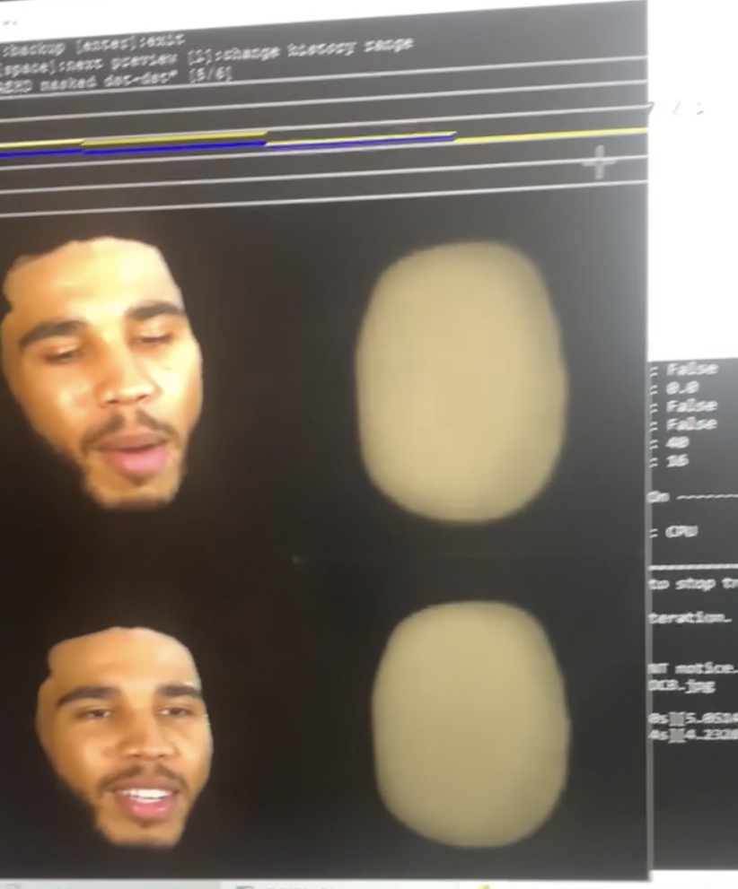
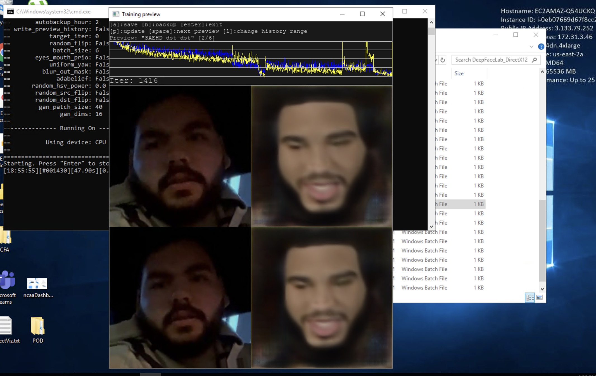

Faisal Fattani Deepfake-Phishing
Deepfake-Phishing
About
Dumbfounded to learn about how prominent spam and phishing are, and that 'yahoo boys' are still successful.
How many levels would it take for me to become susceptible?
- "Come on that's obviously not a real Nigerian Prince behind that email..."
- "Come on that Nigerian Prince is definitely trying to scam me."
- "Come on Nigerian Prince, you are not my friend and you can't pretend to be"
- "Come on ..friend? my uhmm social security number?"
Can deepfakes be used as a cyber-attack tool in spearphishing?
Fishing vs Spearfishing; Phishing vs Spearphishing
The Plan
Step 1: Generate Deepfakes of myself
Step 2: Share fake recordings with friends through snapchat, stories, and more.
Step 3: Observe reactions, deepfakes called out? 'success'?
Step 1: Generate Deepfakes of myself
Step 2: Share fake recordings with friends through snapchat, stories, and more.
Step 3: Observe reactions, deepfakes called out? 'success'?
Different statke-levels to test:
- Low: can a deepfake simply 'pass by'.
- Medium: can I 'pass by' a deepfake as myself to start a conversation.
- High: can I get credentials using a deepfake.
Plan designed to test the main question rather than as a cyber-attack method.
Under the fake hood
- Simple Deepfake workflow (DeepFaceLab Package):
- Compile sources: of both 'source' and 'destination' faces for the model to be trained on.
- Extract still frames from videos.
- ML model 1: extracts faces from frames and orients them for following models.
- ML model 2: masks the 'face' area.
- ML: model 3: train to mash source face into destination.
- Merge back frames with new fake faces.
Plan in Action
Generating deepfakes is rather costly

Compiling Sources
if only the rest of the process was as easy...
First results as I finally got set up on AWS:
Realized I can use pretrained models!
first fabricated deepfake
Back to the plan:
Production and Reactions
Stake-Level 1
Stake-Level 2 (1.5?)
Stake-Level 3
- Sent to 13 people.
- 6(!) replied that they don't know any passwords.
- 4 laughed along.
- 1 reached out about me being hacked?
Reflecting back
Even though cases that had any remote 'sucess' were rare, I think my overall answer is closer to yes than no considering the situation and its scale.
Deepfake qualitiy seemed to be the tool's weakest point and cybercrime groups can probably produce much higher quality deepfakes without getting quite as worried about their card rejecting AWS charges.